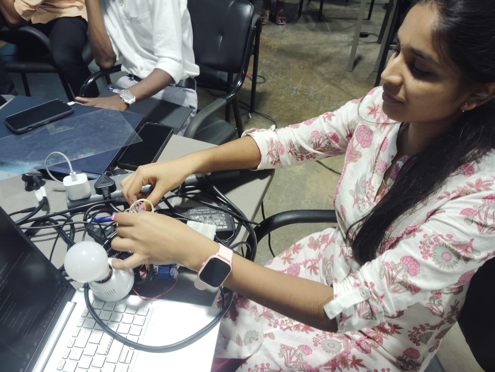
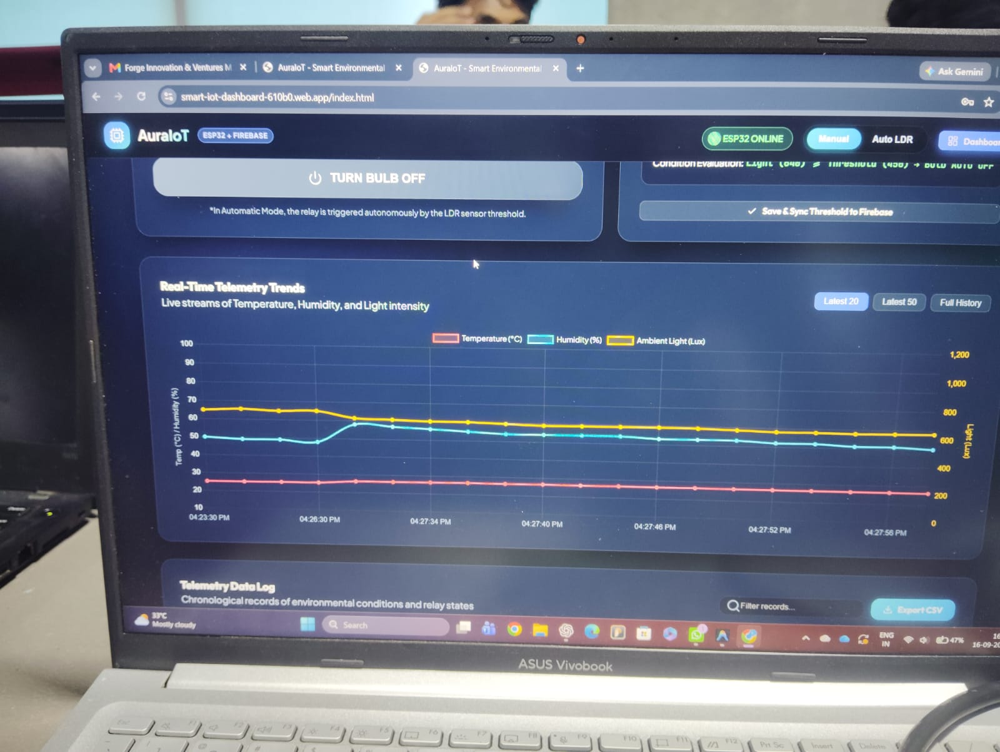
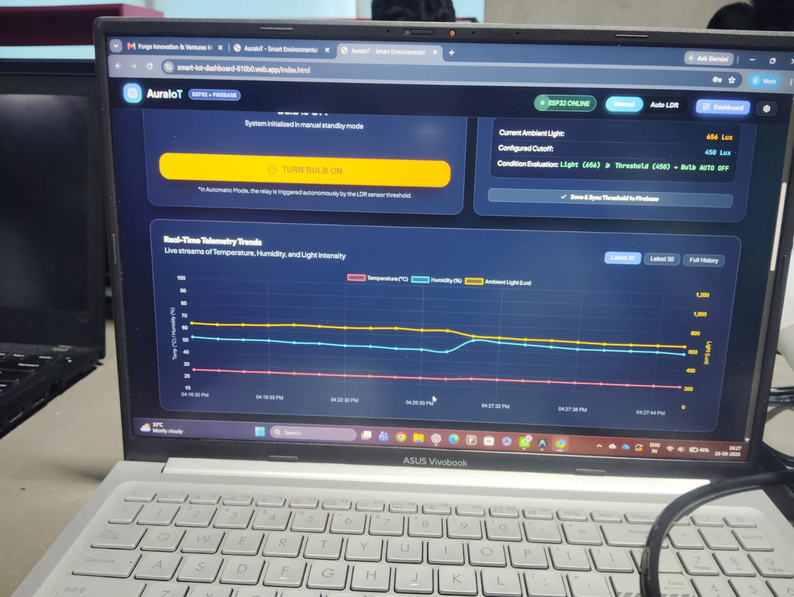
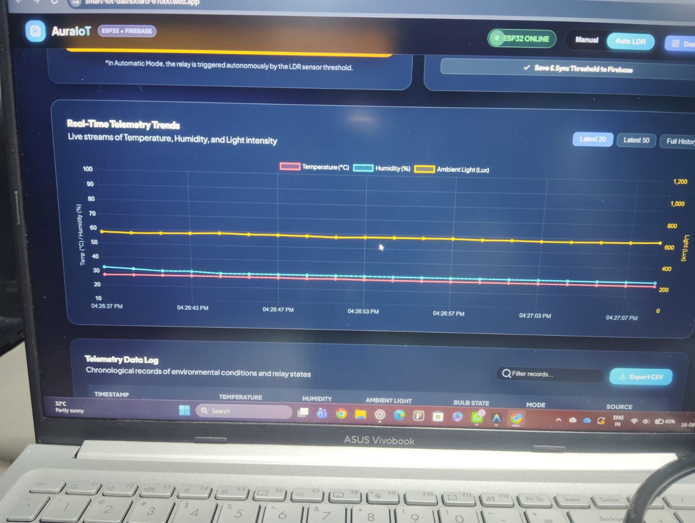
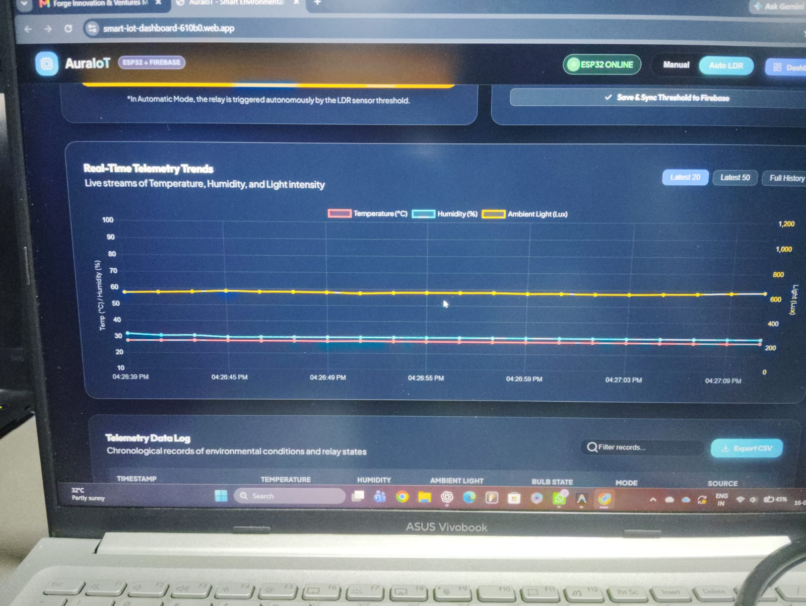
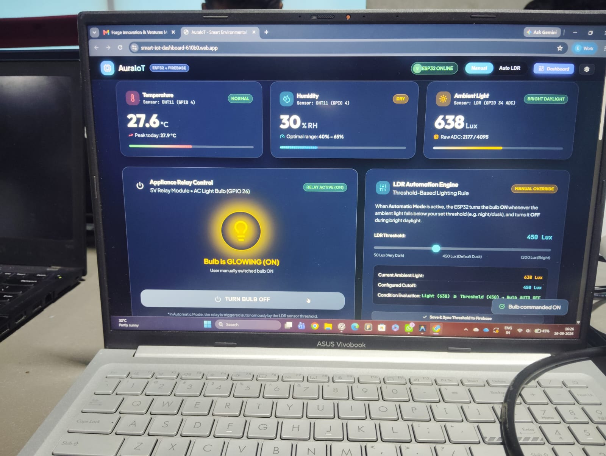
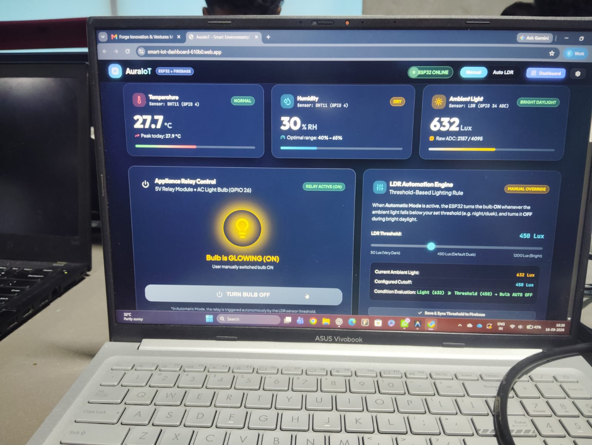
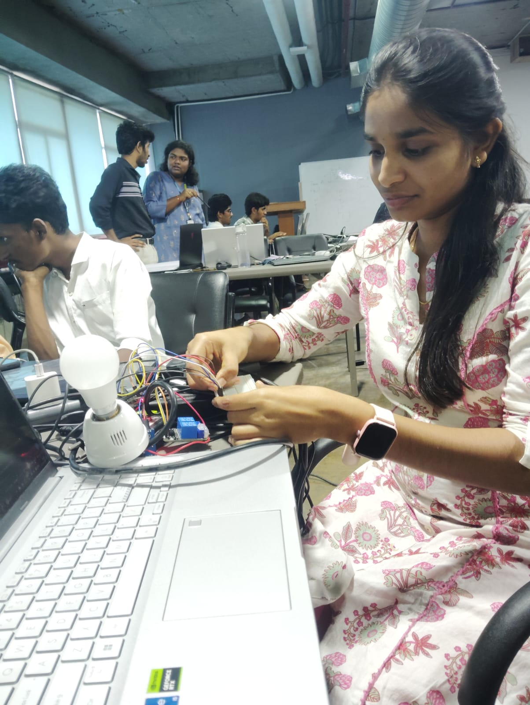

Firebase Hardware: Bulb, DHT11, Button & ESP32
Complete physical edge device implementation: interfacing NodeMCU ESP32 with an AC light bulb, 5V optocoupled relay, DHT11 temperature/humidity sensor, analog LDR daylight sensor, and tactile push button — communicating bidirectionally in real time with Google Firebase Realtime Database.
Hardware Construction & Circuit Execution (8 Authentic Photos)
Comprehensive photographic proof showing each stage of the physical hardware build: wiring the ESP32 with the DHT11 sensor, LDR light sensor, manual override button, relay driver, and live AC light bulb testing.








Key Technical Points
Hardware Interfacing, Streaming & Safety- Full-Duplex Bi-Directional Synchronization: When the web dashboard flips the toggle, the ESP32 stream callback triggers the relay in < 90ms; conversely, pressing the physical push button toggles the relay locally and pushes the new state to Firebase immediately.
- Multi-Sensor Acquisition: Concurrently reads the digital one-wire protocol of the DHT11 sensor on GPIO 4 and samples the analog voltage divider of the LDR on GPIO 34 (ADC1), mapping raw 12-bit ADC (0-4095) to Lux.
- Optical Relay Isolation & Mains AC Safety: The 5V relay module incorporates an optocoupler that electrically isolates the 3.3V ESP32 microelectronics from inductive spikes and high-voltage 230V AC mains lines.
-
Hardware Debouncing on Manual Override: Configured GPIO 14 with internal pull-up (
INPUT_PULLUP) and programmed 200ms software edge-debouncing to prevent erratic multi-triggering. -
Firebase Event-Driven Streaming: Leveraged
Firebase.RTDB.beginStream()to establish a continuous HTTP Server-Sent Events (SSE) socket with Google Cloud, removing the need for wasteful continuous polling.
What I Learned & Insights
Engineering Lessons & Practical Experience- Mixed-Signal Breadboard Prototyping: Learned to route high-voltage AC mains lines completely separate from sensitive 3.3V digital and analog sensor signal rails to avoid electromagnetic interference (EMI).
- Fail-Safe Cloud Reconnection: Implemented non-blocking Wi-Fi and Firebase token refresh loops that allow the ESP32 to maintain local button switching even if internet connectivity drops temporarily.
- ADC Calibration on ESP32: Understood the non-linear response of ESP32 ADC channels and calibrated the LDR voltage divider with a multi-point look-up curve for accurate ambient Lux measurement.
- End-to-End Smart Home Ecosystem: Built the complete bridge from physical hardware (bulb, DHT11, push button, relay) to cloud middleware (Firebase RTDB) and custom web dashboards.
Arduino IDE Source Code
Complete embedded C++ firmware for ESP32 integrating Firebase_ESP_Client.h and DHT.h with push-button debouncing, DHT11 sampling, LDR reading, and bidirectional relay control.
#include <WiFi.h>
#include <Firebase_ESP_Client.h>
#include <DHT.h>
// =========================================================
// Hardware Pin Assignment
// =========================================================
#define DHT_PIN 4 // DHT11 Sensor Data (GPIO 4)
#define DHT_TYPE DHT11
#define LDR_PIN 34 // LDR Analog Light Sensor (GPIO 34 / ADC1)
#define BUTTON_PIN 14 // Tactile Push Button (GPIO 14, INPUT_PULLUP)
#define RELAY_PIN 26 // 5V Relay Module -> AC Bulb (GPIO 26)
#define STATUS_LED 2 // Onboard Blue Indicator LED (GPIO 2)
// Wi-Fi & Firebase Credentials
#define WIFI_SSID "YOUR_WIFI_SSID"
#define WIFI_PASSWORD "YOUR_WIFI_PASSWORD"
#define API_KEY "AIzaSyDemoAuraIoTKey_Elakiya"
#define DATABASE_URL "https://smart-iot-dashboard-610b0-default-rtdb.firebaseio.com/"
// Objects
DHT dht(DHT_PIN, DHT_TYPE);
FirebaseData streamData;
FirebaseData writeData;
FirebaseAuth auth;
FirebaseConfig config;
// Runtime Variables
bool bulbState = false;
int lastButtonState = HIGH;
unsigned long lastDebounce = 0;
unsigned long lastTelemetry= 0;
const long telemetryInterval = 5000; // Upload telemetry every 5s
// =========================================================
// Firebase Stream Callback: Fires when Web Dashboard clicks toggle
// =========================================================
void streamCallback(FirebaseStream data) {
if (data.dataPath() == "/bulbState") {
bulbState = (data.intData() == 1);
digitalWrite(RELAY_PIN, bulbState ? HIGH : LOW);
digitalWrite(STATUS_LED, bulbState ? HIGH : LOW);
Serial.printf("[STREAM] AC Bulb switched to: %s\n", bulbState ? "ON" : "OFF");
}
}
void setup() {
Serial.begin(115200);
dht.begin();
pinMode(RELAY_PIN, OUTPUT);
pinMode(STATUS_LED, OUTPUT);
pinMode(BUTTON_PIN, INPUT_PULLUP);
digitalWrite(RELAY_PIN, LOW);
// Connect Wi-Fi
WiFi.begin(WIFI_SSID, WIFI_PASSWORD);
while (WiFi.status() != WL_CONNECTED) {
delay(400);
Serial.print(".");
}
Serial.println("\nWi-Fi Connected! IP: " + WiFi.localIP().toString());
// Initialize Firebase
config.api_key = API_KEY;
config.database_url = DATABASE_URL;
Firebase.begin(&config, &auth);
Firebase.reconnectWiFi(true);
// Start Realtime Stream for Bulb State Control
Firebase.RTDB.beginStream(&streamData, "/controls");
Firebase.RTDB.setStreamCallback(&streamData, streamCallback, NULL);
Serial.println("Firebase RTDB Stream Listening!");
}
void loop() {
unsigned long now = millis();
// 1. Manual Push-Button Edge Detection & Debounce
int reading = digitalRead(BUTTON_PIN);
if (reading == LOW && lastButtonState == HIGH && (now - lastDebounce > 250)) {
lastDebounce = now;
bulbState = !bulbState;
digitalWrite(RELAY_PIN, bulbState ? HIGH : LOW);
digitalWrite(STATUS_LED, bulbState ? HIGH : LOW);
// Push new state to Firebase immediately
Firebase.RTDB.setInt(&writeData, "/controls/bulbState", bulbState ? 1 : 0);
Serial.printf("[BUTTON] Toggled AC Bulb -> %s\n", bulbState ? "ON" : "OFF");
}
lastButtonState = reading;
// 2. Periodic Environmental Sensor Reading & Upload
if (now - lastTelemetry >= telemetryInterval) {
lastTelemetry = now;
float temp = dht.readTemperature();
float hum = dht.readHumidity();
int ldrRaw = analogRead(LDR_PIN);
int lux = map(ldrRaw, 0, 4095, 10, 1200);
if (!isnan(temp) && !isnan(hum)) {
FirebaseJson json;
json.set("temperature", temp);
json.set("humidity", hum);
json.set("lux", lux);
json.set("bulbState", bulbState ? "ON" : "OFF");
json.set("timestamp", now / 1000);
Firebase.RTDB.setJSON(&writeData, "/telemetry/live", &json);
Serial.printf("[TELEMETRY] Temp: %.1f C | Hum: %.1f %% | Lux: %d\n", temp, hum, lux);
}
}
}